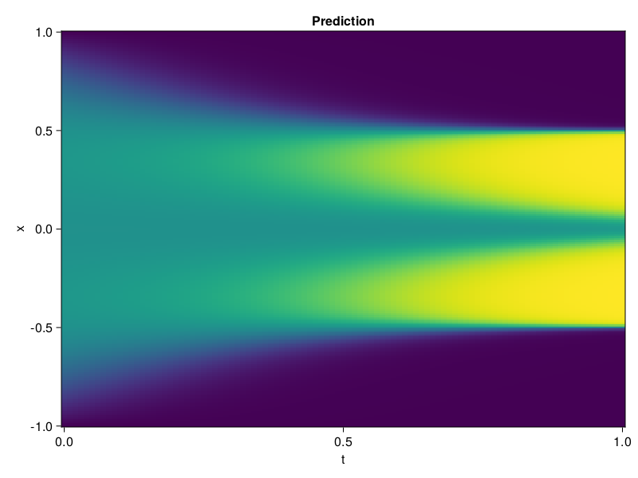

Allen-Cahn Equation with Sequential Training
In this tutorial we are going to solve the Allen-Cahn equation with periodic boundary condition from $t=0$ to $t=1$. The traning process is split into four stages, namely $t\in [0,0.25]$, $t\in [0.0,0.5]$, $t\in [0.0,0.75]$ and $t\in [0.0, 1.0]$.
using ModelingToolkit, IntervalSets
using Sophon
using Optimization, OptimizationOptimJL
@parameters t, x
@variables u(..)
Dₓ = Differential(x)
Dₓ² = Differential(x)^2
Dₜ = Differential(t)
eq = Dₜ(u(x, t)) - 0.0001 * Dₓ²(u(x, t)) + 5 * u(x,t) * (abs2(u(x,t)) - 1.0) ~ 0.0
domain = [x ∈ -1.0..1.0, t ∈ 0.0..0.25]
bcs = [u(x,0) ~ x^2 * cospi(x),
u(-1,t) ~ u(1,t)]
@named allen = PDESystem(eq, bcs, domain, [x, t], [u(x, t)])\[ \begin{align} - 0.0001 \frac{\mathrm{d}^{2}}{\mathrm{d}x^{2}} u\left( x, t \right) + 5 \left( -1.0 + \left|u\left( x, t \right)\right|^{2} \right) u\left( x, t \right) + \frac{\mathrm{d}}{\mathrm{d}t} u\left( x, t \right) =& 0.0 \end{align} \]
Then we define the neural net, the sampler, and the training strategy.
chain = FullyConnected(2, 1, tanh; hidden_dims=16, num_layers=4)
pinn = PINN(chain)
sampler = QuasiRandomSampler(500, (300, 100))
strategy = NonAdaptiveTraining(1, (50, 1))
prob = Sophon.discretize(allen, pinn, sampler, strategy)OptimizationProblem. In-place: true
u0: ComponentVector{Float64}(layer_1 = (weight = [-0.7272507548332214 -0.7017959952354431; -0.7420235872268677 0.048082008957862854; … ; 0.44982507824897766 -1.1776281595230103; -1.7083221673965454 -1.1340383291244507], bias = [0.0; 0.0; … ; 0.0; 0.0;;]), layer_2 = (weight = [0.14587438106536865 -0.4234788119792938 … 0.5485325455665588 -0.25666892528533936; -0.07817889750003815 0.5478883385658264 … 0.10241339355707169 -0.5125369429588318; … ; -0.4562527537345886 0.15673281252384186 … -0.7082403302192688 0.0935521051287651; -0.05578866973519325 -0.3448055684566498 … -0.54364013671875 0.17747174203395844], bias = [0.0; 0.0; … ; 0.0; 0.0;;]), layer_3 = (weight = [0.5349258780479431 -0.46831339597702026 … 0.10403715819120407 -0.06769204139709473; -0.10402949899435043 0.2250218242406845 … -0.5369662046432495 -0.03994709998369217; … ; -0.46098846197128296 -0.6711099147796631 … -0.31413090229034424 0.2655709683895111; 0.1555652767419815 -0.2798142433166504 … -0.4445563554763794 -0.6757930517196655], bias = [0.0; 0.0; … ; 0.0; 0.0;;]), layer_4 = (weight = [0.6976276636123657 0.2902791500091553 … 0.4121193289756775 -0.47239387035369873; 0.20884482562541962 -0.3924034833908081 … -0.6655973196029663 0.46713733673095703; … ; -0.5326526761054993 0.2514779269695282 … 0.14564158022403717 0.6465777158737183; -0.6662235260009766 -0.15561413764953613 … 0.1368248611688614 -0.3192073106765747], bias = [0.0; 0.0; … ; 0.0; 0.0;;]), layer_5 = (weight = [-0.14516770839691162 0.5790059566497803 … -0.14250709116458893 -0.22175708413124084], bias = [0.0;;]))We solve the equation sequentially in time.
function train(allen, prob, sampler, strategy)
bfgs = BFGS()
res = Optimization.solve(prob, bfgs; maxiters=2000)
for tmax in [0.5, 0.75, 1.0]
allen.domain[2] = t ∈ 0.0..tmax
data = Sophon.sample(allen, sampler)
prob = remake(prob; u0=res.u, p=data)
res = Optimization.solve(prob, bfgs; maxiters=2000)
end
return res
end
res = train(allen, prob, sampler, strategy)u: ComponentVector{Float64}(layer_1 = (weight = [-1.3056491728005042 -0.28940469014798853; -0.568326122220213 0.09411584275822812; … ; -0.08074724405115148 -1.0213207729191345; -1.7750768093726894 -0.8172157653400874], bias = [-0.8193751165763157; 0.46442870548638027; … ; 0.05962590182810463; 1.3324546405740587;;]), layer_2 = (weight = [0.03569099225179706 -0.4266595869058389 … 0.4240209525591006 -0.23848108889290034; 0.0358959519435102 0.3872541455175789 … 0.008592675933783867 -0.8775355708017274; … ; 0.0007220023561869032 0.29230304740724905 … -0.786494794647551 0.08365200747640637; -0.2046321914909064 -0.2947866264497074 … -0.42944199278889694 0.4027902725926706], bias = [-0.24118136123942; -0.22620392408788134; … ; -0.14314212756464498; 0.35920804012769614;;]), layer_3 = (weight = [0.5234304142050812 -0.3906877156989578 … 0.18879362079911302 0.05824329745330234; -0.27943532080409494 0.4357953269676431 … -1.0548830708305523 0.36286418884848654; … ; -0.17146064947623763 -1.2743728442556914 … -0.26405030973453225 0.9139676292915832; 0.17713108436861255 -0.1380821381443327 … -0.5161722989562338 -0.7465853318776424], bias = [-0.1590003917558194; -0.16894471976215508; … ; -0.10625529797981173; -0.2798116770616319;;]), layer_4 = (weight = [0.5038789500711233 0.4511096904687707 … 0.3342676269069314 -0.4322839247034927; -0.4446817277638923 -0.6755587426207518 … -0.7430097042582561 0.5988429217272454; … ; 0.025524226353532672 1.2509249063023506 … 0.2594512731626008 0.9813568073079274; -0.8106794244137372 -0.4155282584966656 … 0.6000219731461429 -0.04494520988159615], bias = [0.04508847490134775; -0.06910926593874372; … ; -0.22314059705507774; -0.19147897082323223;;]), layer_5 = (weight = [-0.08000463115458967 0.5138746118995028 … 0.7697204618823158 -0.1459253498942844], bias = [0.1470332989127246;;]))Let's plot the result.
using CairoMakie
phi = pinn.phi
xs, ts = [infimum(d.domain):0.01:supremum(d.domain) for d in allen.domain]
axis = (xlabel="t", ylabel="x", title="Prediction")
u_pred = [sum(pinn.phi([x, t], res.u)) for x in xs, t in ts]
fig, ax, hm = heatmap(ts, xs, u_pred', axis=axis)